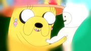
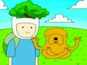
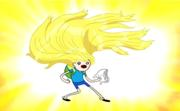

Finn the Human
Finn the Human
Finn (full title: Finn the Human, known as Finn Mertens in the Farmworld timeline and formerly as Pen in the original short) is the main protagonist of the series Adventure Time.
Background:
Margaret finds Finn and adopts him.
As shown in "Memories of Boom Boom Mountain," Finn appears to have been abandoned in the woods during infancy. He reveals that he made "boom boom" (Finn's word for defecation) on a large leaf, then fell on it, and lay there crying until Joshua and Margaret (Jake's parents) rescued him from the wilderness. They raised him alongside Jake, who, along with Jermaine, became Finn's adopted brother. In "Memory of a Memory," a baby Finn is seen singing a song in the bathroom of what appears to be Joshua and Margaret's house. In "Henchman," when Finn is asked about his parents, he says Jake told him that he came from a cabbage as a jest. In "Susan Strong," Finn states that he knows nothing of his human parents or any other humans.
Status as the last human
Finn was for a long time, the only confirmed human in the Land of Ooo. In the episode "Her Parents," Lady Rainicorn's dad says he thought humans had been extinct. This lends new significance to his title "Finn the Human," as his humanity may be unique in Ooo.
Up until "Susan Strong," Finn believes he has never met another human and becomes morose and "soul-searchy" when he thinks about it. In the same episode, Finn encounters Susan Strong. Even though the other members of Susan's tribe of Hyoomans are revealed to be mutants, Susan's identity as a human or mutant is left ambiguous. In "Beautopia," it may be true that Susan is also a human, but it was not confirmed. The businessmen may be humans, though with their minds damaged from their suspension in an iceberg, giving their tonal inflection and, to some extent, mental capabilities zombie-esque qualities.
Other "human" characters (such as Penny, Phil or the Old Man Henchman) have been confirmed by the show's creator, Pendleton Ward, to be mutants or humanoids. According to Pendelton Ward's FAQ page, even Finn is mutated in some way.
Fionna is also a human, although she is just a character in Ice King's fan fiction. Ice King was formerly a human, as shown in "Holly Jolly Secrets Part II." Mothering a half-demon, Marceline's mom was also human when she gave birth to Marcy, though her fate is unknown.
Moe, creator of BMO was also human but as he grew old, some of his functions were replaced by machines while only his skin and hair remains human. He is still now classified as a humanoid, since he is a human-like being that lives in the land of Ooo.
As of "Betty" Finn is no longer the last confirmed human in Ooo as Betty Grof now lives there.
In "Billy's Bucket List," Finn is told by Billy (who was dead but speaking through a constellation in the sky) that his father is in fact still alive, though when shown, Finn's father appears to be frozen in some sort of gem, in what may be some sort of cryogenic sleep. However, it is still unknown whether Finn's mother is currently alive.
Appearance and equipment:
 Finn's hands have five digits in "His Hero" when he makes air quotes while saying "pooping."
Finn's hands have five digits in "His Hero" when he makes air quotes while saying "pooping."Finn is a 15-year-old human. He is roughly five feet tall. He has several missing teeth because he bites trees and rocks among other things.
Although his eyes typically lack detail and appear as small black dots due to a minor mutation, they are shown to have color in "The Enchiridion!" when Finn is tried by the Dark Magician. His left eye is green while his right eye is blue, characteristic of the genetic condition heterochromia. However, as stated by lead character designer Andy Ristaino on Spring, "That was a special occasion. The heterochromatic effect was a byproduct of him being hypnotized by that guardian dude." Andy confirmed that Finn's eyes are blue.
Hair
Pen, Finn's original art design

Finn has blonde hair which is first seen in "To Cut a Woman's Hair," where Finn removes his hat, and long, golden locks of hair flows out. His hair has a glowing sheen and extended his body length, until he cuts it off and gives it to the Tree Witch. His hair slowly begins to regrow throughout several episodes, as shown in "Mortal Folly," "Heat Signature," "Apple Thief," "Beautopia," "No One Can Hear You," "Another Way," "Beyond this Earthly Realm," "Gotcha!," "You Made Me," "Who Would Win," "The Hard Easy," "The Lich," "Jake the Dog," and "All the Little People," In "Another Way," Finn's hair has grown to the point of nearly his shoulders, and later, in "Beyond this Earthly Realm," Finn's hair is shown to have grown past his shoulders. In "Gotcha!," Lumpy Space Princess sees an illusion of Finn with hair reaching his waist. Finn's hair is also seen in "You Made Me" when he defends Princess Bubblegum from Lemongrab's attack, which causes his hat to fly off. A few strands of his hair are seen coming out in "Who Would Win" after Finn repeatedly gets beaten by Jake and later throughout the episode. The hair makes an appearance in "The Hard Easy," having roughly the same length as in "Beyond this Earthly Realm." In "The Lich," Finn pulls off his hat, where it seems to be a bit longer than in its appearance in previous episodes. In the episode "Davey," Finn has shaves off almost all of his hair for the second time so he can disguise himself as 'Davey'. In "Little Dude," it starts to grow again. In "The Great Bird Man," Finn's hair seems to be growing longer again. In "A Glitch is a Glitch," his hair is the same length from when it was first shown. In "Puhoy," Finn, as an adult, grows facial hair. His hair can also be seen in "Jake Suit." In "Love Games," his hair appears to be the same length it was in "You Made Me." In "Dungeon Train," it is a bit shorter than in "Love Games."
Clothing
Finn wears a white hat with two "ears" sticking out on top. The hat is inspired by a character called Bueno, a bear that appears in comics made by Pendleton Ward, the creator of Adventure Time. Consequently, Finn's hat is bear themed; coincidentally the Hyoomans wear animal themed hats as well. This might be a hint that humans in the Land of Ooo wear animal hats to fit in the society. Finn's hat covers his entire head except for his face. He also wears a light-blue T-shirt (or as he would call it, baby blue "boy-style"), denim shorts, a green circular backpack, rolled-down white socks, and a pair of black shoes. In "Ocean of Fear," his footwear appears to be black booties with white cuffs. In "It Came from the Nightosphere," Finn has a small pocket sewn onto his shirt that he carries Jake in. It appears again in "Davey" where he uses it to hide Jake while Finn steals the keys from the guards as he breaks the former out of jail. When he is in the Ice Kingdom, he occasionally wears a yellow sweater, but currently wears his pink sweater made by Princess Bubblegum. During "In Your Footsteps," the Bear wears Finn's clothes, which suggests that Finn has multiple sets of the same outfit, along with multiple hats. However, in "Little Dude," when Finn's hat comes to life and is set free, Jake tells Finn, "OK, let's go skin an evil bear," which may imply that Finn only has one hat, or only had one hat left.